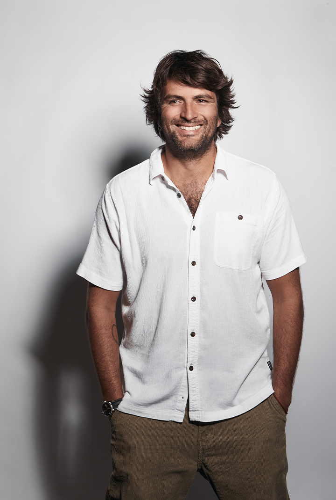
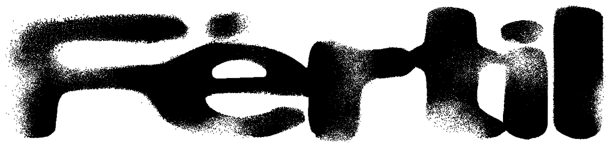
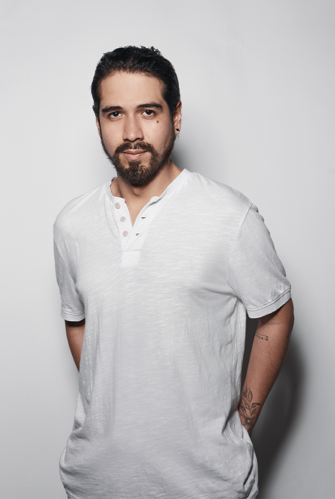
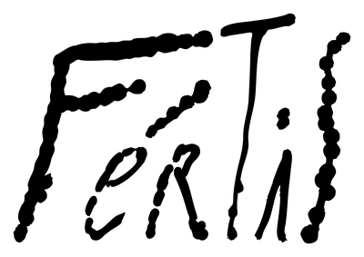

Tarek Pérez A.
Partner & Executive Producer
[Texto pendiente -- bio de Tarek Pérez A.]
Fértil is a production company specialized in creating high-end work for brands, agencies and studios from around the world.
We develop commercials, experiences and institutional pieces with a cinematic eye, paying close attention to craft, narrative and depth of every creative process.
We collaborate with some of the region's leading advertising agencies for clients including Adidas, Nike, AB InBev, La Tinka, Skynn, BBVA, Cabify, among others. Our work has earned major industry recognition, including a Grand Prix at Cannes Lions.


Partner & Executive Producer
[Texto pendiente -- bio de Tarek Pérez A.]
Partner & Director
[Texto pendiente -- bio de Santiago Chávez.]

